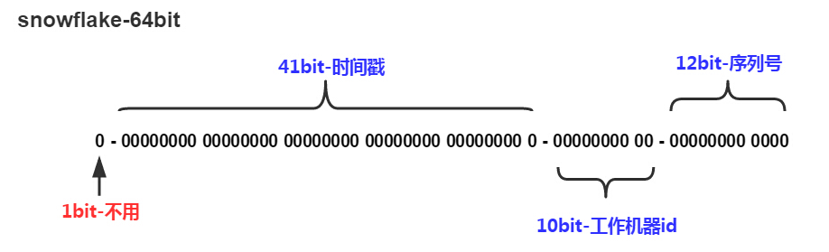

我们采用的是开源的twitter( 非官方中文惯称：推特.是国外的一个网站，是一个社交网络及微博客服务) 的snowflake算法（推特雪花算法）。

封装为工具类，源码如下：
package util;
import java.lang.management.ManagementFactory;
import java.net.InetAddress;
import java.net.NetworkInterface;
/**
* <p>名称：IdWorker.java</p>
* <p>描述：分布式自增长ID</p>
* <pre>
* Twitter的 Snowflake JAVA实现方案
* </pre>
* 核心代码为其IdWorker这个类实现，其原理结构如下，我分别用一个0表示一位，用—分割开部分的作用：
* 1||0---0000000000 0000000000 0000000000 0000000000 0 --- 00000 ---00000 ---000000000000
* 在上面的字符串中，第一位为未使用（实际上也可作为long的符号位），接下来的41位为毫秒级时间，
* 然后5位datacenter标识位，5位机器ID（并不算标识符，实际是为线程标识），
* 然后12位该毫秒内的当前毫秒内的计数，加起来刚好64位，为一个Long型。
* 这样的好处是，整体上按照时间自增排序，并且整个分布式系统内不会产生ID碰撞（由datacenter和机器ID作区分），
* 并且效率较高，经测试，snowflake每秒能够产生26万ID左右，完全满足需要。
* <p>
* 64位ID (42(毫秒)+5(机器ID)+5(业务编码)+12(重复累加))
*
* @author Polim
*/
public class IdWorker {
// 时间起始标记点，作为基准，一般取系统的最近时间（一旦确定不能变动）
private final static long twepoch = 1288834974657L;
// 机器标识位数
private final static long workerIdBits = 5L;
// 数据中心标识位数
private final static long datacenterIdBits = 5L;
// 机器ID最大值
private final static long maxWorkerId = -1L ^ (-1L << workerIdBits);
// 数据中心ID最大值
private final static long maxDatacenterId = -1L ^ (-1L << datacenterIdBits);
// 毫秒内自增位
private final static long sequenceBits = 12L;
// 机器ID偏左移12位
private final static long workerIdShift = sequenceBits;
// 数据中心ID左移17位
private final static long datacenterIdShift = sequenceBits + workerIdBits;
// 时间毫秒左移22位
private final static long timestampLeftShift = sequenceBits + workerIdBits + datacenterIdBits;
private final static long sequenceMask = -1L ^ (-1L << sequenceBits);
/* 上次生产id时间戳 */
private static long lastTimestamp = -1L;
// 0，并发控制
private long sequence = 0L;
private final long workerId;
// 数据标识id部分
private final long datacenterId;
public IdWorker(){
this.datacenterId = getDatacenterId(maxDatacenterId);
this.workerId = getMaxWorkerId(datacenterId, maxWorkerId);
}
/**
* @param workerId
* 工作机器ID
* @param datacenterId
* 序列号
*/
public IdWorker(long workerId, long datacenterId) {
if (workerId > maxWorkerId || workerId < 0) {
throw new IllegalArgumentException(String.format("worker Id can't be greater than %d or less than 0", maxWorkerId));
}
if (datacenterId > maxDatacenterId || datacenterId < 0) {
throw new IllegalArgumentException(String.format("datacenter Id can't be greater than %d or less than 0", maxDatacenterId));
}
this.workerId = workerId;
this.datacenterId = datacenterId;
}
/**
* 获取下一个ID
*
* @return
*/
public synchronized long nextId() {
long timestamp = timeGen();
if (timestamp < lastTimestamp) {
throw new RuntimeException(String.format("Clock moved backwards. Refusing to generate id for %d milliseconds", lastTimestamp - timestamp));
}
if (lastTimestamp == timestamp) {
// 当前毫秒内，则+1
sequence = (sequence + 1) & sequenceMask;
if (sequence == 0) {
// 当前毫秒内计数满了，则等待下一秒
timestamp = tilNextMillis(lastTimestamp);
}
} else {
sequence = 0L;
}
lastTimestamp = timestamp;
// ID偏移组合生成最终的ID，并返回ID
long nextId = ((timestamp - twepoch) << timestampLeftShift)
| (datacenterId << datacenterIdShift)
| (workerId << workerIdShift) | sequence;
return nextId;
}
private long tilNextMillis(final long lastTimestamp) {
long timestamp = this.timeGen();
while (timestamp <= lastTimestamp) {
timestamp = this.timeGen();
}
return timestamp;
}
private long timeGen() {
return System.currentTimeMillis();
}
/**
* <p>
* 获取 maxWorkerId
* </p>
*/
protected static long getMaxWorkerId(long datacenterId, long maxWorkerId) {
StringBuffer mpid = new StringBuffer();
mpid.append(datacenterId);
String name = ManagementFactory.getRuntimeMXBean().getName();
if (!name.isEmpty()) {
/*
* GET jvmPid
*/
mpid.append(name.split("@")[0]);
}
/*
* MAC + PID 的 hashcode 获取16个低位
*/
return (mpid.toString().hashCode() & 0xffff) % (maxWorkerId + 1);
}
/**
* <p>
* 数据标识id部分
* </p>
*/
protected static long getDatacenterId(long maxDatacenterId) {
long id = 0L;
try {
InetAddress ip = InetAddress.getLocalHost();
NetworkInterface network = NetworkInterface.getByInetAddress(ip);
if (network == null) {
id = 1L;
} else {
byte[] mac = network.getHardwareAddress();
id = ((0x000000FF & (long) mac[mac.length - 1])
| (0x0000FF00 & (((long) mac[mac.length - 2]) << 8))) >> 6;
id = id % (maxDatacenterId + 1);
}
} catch (Exception e) {
System.out.println(" getDatacenterId: " + e.getMessage());
}
return id;
}
/**
* 测试
*/
public static void main(String[] args) {
IdWorker idWorker=new IdWorker(0,0);
for(int i=0; i<100;i++) {
long nextId = idWorker.nextId();
System.out.println(nextId);
}
}
}